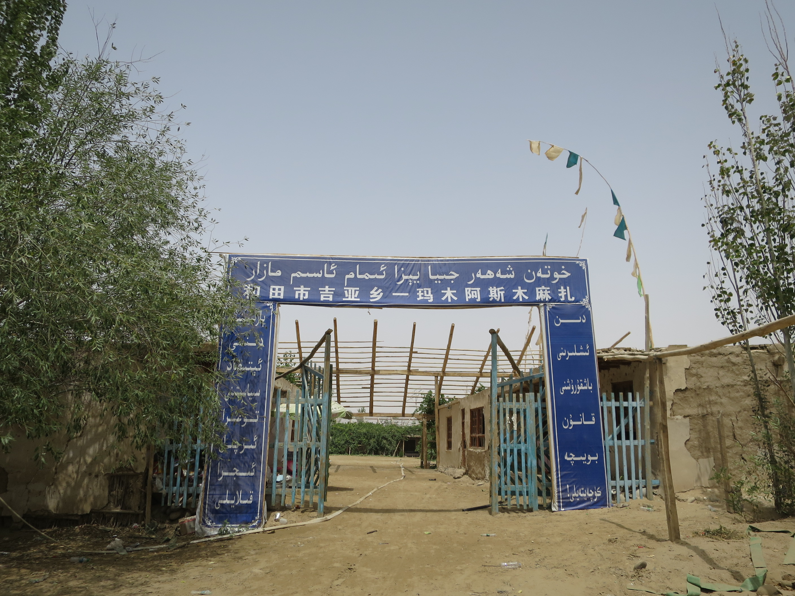
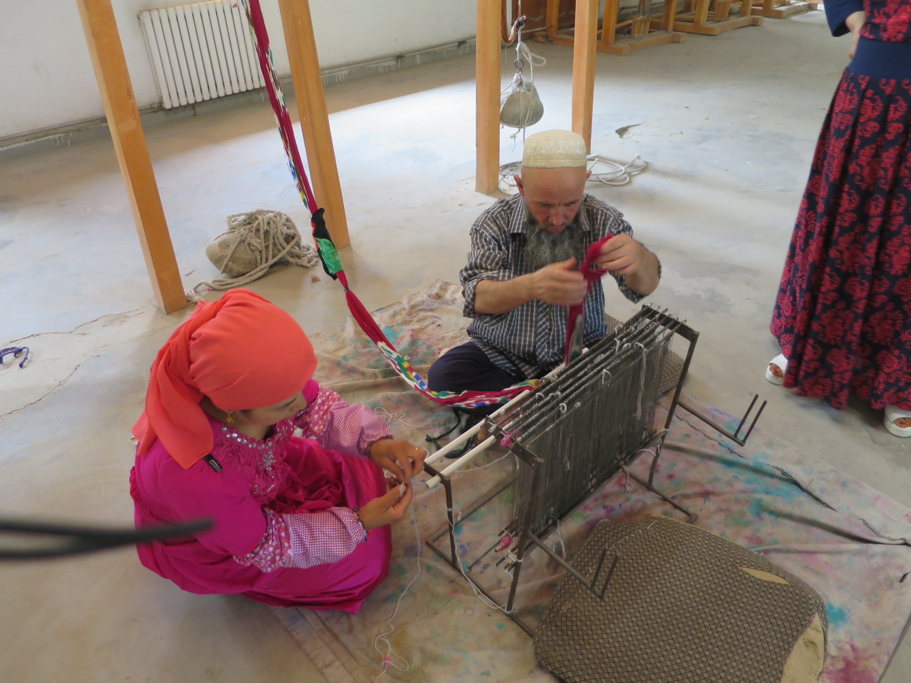

2015-07-24
～提防小手～
由敦煌到和田，日車夜車日車，數天都是坐車，由初初覺得攞我命，變成覺得都幾開心，終於完成這段遊車河的路線。今天可以正式開始周圍行。朝早街道冷清，早餐吃街邊檔的炸麵團、雞蛋，一元五角，茶還要是送的，好便宜。
客運站的台北路，原來有很多很多的旅舍，不過很多都未必會招持外地人，在紅星廣場裏面有間紅星賓館，我上去問問價錢看看房，這裏竟然四十人仔就有一間獨立房呢，不過，這裏沒有風扇，冷氣機也是壞的，夜晚不熱死才怪，而且這賓館黑黑暗暗，還是繼續住我那間百六人仔的房。雖然這個價太不值了，熱水有等於無，而且，十分髒。
但低處未算低，紅星更髒，上去要經過商場的樓梯，都是尿味。商場裏面有個市場，賣蔬果鮮肉，另外又有遊戲機舖，晨咁早裏面就有廢青打機。
行到市中心北京西路，經過團結廣場，萬惡的毛魔 and friend 像，廣場戒備誇張，十多輛警車停在這裏，那些武警，站在那些黑色圍欄之內，附近的街道，有裝甲車。廣場有一間叫女王爵士的咖啡店，有不難喝的即沖咖啡賣，更有港澳特色食物如老婆餅和葡撻賣。
和田有玉都之稱，因為這裏出產的玉十分有名，北京西路有一段路都是玉店。和田以前叫做和闐，我不知道為什麼要改名，現在仍有店標榜賣的是和闐玉。市中心有很多地下商店，也是地下通道，通道中的商店街，會有安全檢查，但好好笑的是，這些檢查口，雖然有類似金屬探測器，但就寫著叫你自己拿袋查，而沒有職員看守。自助安全檢查咁有型？
在街上見到屋中有一座窄小的清真寺，令我留意的是寺門上的一些字牌，中間的牌寫著「模範清真寺」，另外一些牌則寫著什麼拿了幾多星的東東，合乎多少個什麼的規則。這是我第一次見到這種寺。
行到去博物館，這博物館有木乃伊看！昨晚和 S 說我錯過了且末的木乃伊，她竟說不用失望，因為且末的墓地關了不能看，而博物館也不特別。其實新疆的是乾屍，以前的人很細小呢，而頭髮竟然保存得那麼好。
博物館的文字介紹，見識到字裏行間的中國自我中心及統一的意識傳播，包括把以前外地來的探險家和考古學家差不多說成盜賊，讚揚自己近年的發挖功績，對新疆每個曾經出現的國家，都視為由漢朝開始就屬於中國，當在某朝代被統治了，就說成是「回到中國」了，而每個地方，都是「因為統一所以得以發展」的。
看完行返去台北路向東一直行去東面客運站，經過名為星期天市場的大 Bazzar (市集) 之前，有一間果汁店，啲果汁係好似噴泉咁由一條喉噴出嚟，然後如果你要飲店員就會斟一杯俾你，一蚊人仔一大杯。天氣咁熱我都唔理啲乜嘢對身體唔好 lu，唔飲就真係死得。
去到東客運站，真係行到我好累，搭巴士去 Jiya，Jiya 係出名生產絲綢，話晒都係絲綢之路南道耶…去到 Jiya 巴士總站，基本上得個十字路口同埋幾檔食市，四周圍乜都冇，都唔知點算好，熱到走去巴士總站對面的店，見到幾個人坐著，一人一支白色雪條，便買了一條又坐著吃，其中一個男人，我認得他就是剛才巴士的司機，他問我：Iman Asim？我點頭，他開價十元車我去。
Imam Asim 就在北面兩公里處，有車，好快就到，我下車司機就走了，我一會兒要行回去。這裏沒有人，十分之寧靜。其實還要行多一段路才能到達 Imam Asim，因為是聖地和沙地，大車不准入去。
我不知道 Imam Asim 是什麼樣子，只知道聖人墓地，踏在這沙路，兩旁是樹，沙路上全是腳印，昨天是星期四，是每星期朝聖的日子，應該相當熱鬧。兩旁的樹外也是沙，遠處見到一些東西，我以為那就是墓了，其實我到現在也不知是什麼。我穿過沙路旁的樹，走去最近的一個沙丘，上面像有一個壇的東東，周圍插了很多一支支物體，有些穿了動物的皮。之後看一些資料說，那些一支支的彩布上是寫著可蘭經的經文。
周圍有數個這樣的東西。在沙丘上往遠處看，一望無際的沙，這裏已經是塔克拉瑪干沙漠的邊了。在沙丘上困難地行，十分炎熱，走著走著，看見遠處有個入口，回到沙道，行到這個入口，入口寫著什麼什麼麻扎，Mazar of Imam Asim。
裏面有很少人，像在休息，我不久留，不想打擾他們，沿路回去，在沙丘上那一排木製的廁格方便，樹底下還留著一壼水洗手。沙走進我的鞋，雙腳不斷被磨損。回去巴士站路口的兩公里，行得十分辛苦。去到巴士就走了，要等半小時，在路口一檔食店，吃了一碗很美味的東西，像涼粉般的凍食，混合他們的辣醬料、鷹咀豆。
乘巴士在 Altas Silk Factory 下車，這工場沒客人，工場員工懂英語，她帶我導賞，介紹造絲過程，然後買了些人手造的絲綢製品，員工說這間 Altas 有二千年歷史。工場附近是個很熱鬧的路口和市集，車路兩旁賣哈密瓜西瓜羊肉，我又見那一碗碗的羊酸奶。
回和田的巴士也在這路口停，來 Jiya 的車只有幾位乘客，回去和田就差不多沒位。回到和田市，巴士又不駛去客運站，在一個迴旋處就要人下車，問路問了很多次才得到答案。我覺得我遊新疆問路或問人什麼資訊都比其他國家困難，維人見不了多少個，見到也好像很難接觸，漢人仲衰，跟本不想幫你，永遠是一副你阻住佢的咀臉。
逛了一會星期天市場，今天雖然不是星期天，但這市場也很旺，又去今早的果汁店喝果汁，付錢的時候感覺到有人從我的手提包拿東西，正當我檢查的時候，卻看見前面背著我的男人，雙手撓在胸前，一條黑色的相機帶從他的手中露出。我走去他身邊左看右看想看清楚，不可思議的事發生了，他轉頭看見我，然後把我的相機放到我手中，然後若無其事離開了。
我還未定下來他已不知所踪。我檢查所有東西都健在，感覺十分奇怪。腦中竟想起昨天巴士上播的《提防小手》。最近我都很鬆懈，今次像個提醒似的。
新疆除了米蘭，還有春天百貨呢。在和田團結廣場南面，有座外貌很有特式的建築，遠看很美，近看，寫著春天百貨，不過看清點，下層像個的士高的東東。晚餐在街角夜市吃，有些檔是一串串食物圍著爐煮著，你要吃哪一串就自已拿來放進中間再灼幾灼，拿了多少串最後才付錢，十分抵食，一蚊人仔一串，我超愛黑木耳，他們用來灼食物的水下了很多辣東西，雖然很辣但好好味。
夜晚洗完澡臨睡前交通賓館竟然沒水，不知搞什麼鬼，深夜又再有水，一開水喉，小強們就出來…


